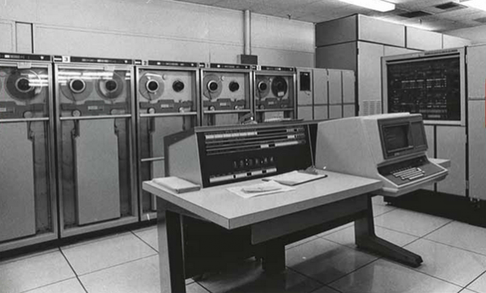
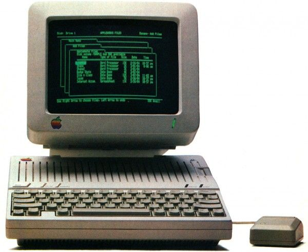
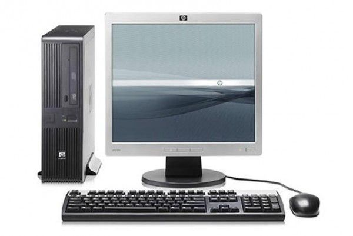
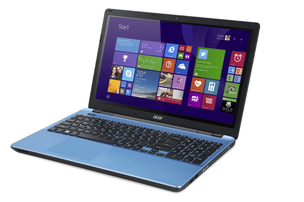

Sejarah Komputer
Di tengah pesatnya perkembangan komputer dan teknologi saat ini, rasanya aneh ya jika menemui seseorang yang tidak tahu dan tidak pernah menggunakan komputer. Bagaimana tidak? Komputer sudah mengisi seluruh relung kehidupan kita, mulai dari digunakan untuk kerja, belajar, sampai bermain. Komputer sekarang ini juga sudah lebih canggih, dilengkapi fitur dan aspek yang dapat kita manfaatkan dalam kehidupan sehari-hari. Tapi, kamu penasaran nggak sih, bagaimana komputer berkembang dari masa ke masa? Mungkin kamu juga pernah mengalami perubahannya, nih.
1. Komputer Generasi Pertama (1940-1956)
Perangkat komputer yang pertama ternyata dikembangkan untuk desain pesawat dan peluru kendali. Komputer generasi pertama ini digagas oleh Konrad Zuse, seorang insinyur asal jerman. Komputer ini menggunakan tabung hampa udara sebagai sirkuit dan drum magnetik untuk memori.
Nah, kamu tahu nggak, komputer generasi pertama ini sangat mahal dan besar, loh! Besarnya itu sampai bisa mengisi seluruh ruangan. Contohnya saja ENIAC, komputer elektronik pertama di dunia yang mempunyai bobot 30 ton, panjang 30 M, dan tinggi 2,4 M. Komputer generasi pertama juga mengandalkan machine language, yaitu level bahasa pemrograman paling rendah yang bisa dimengerti oleh komputer. Bahasa pemrograman ini hanya bisa menyelesaikan satu perhitungan setiap waktu, serta butuh berhari-hari atau berminggu-minggu untuk menyetel perhitungan baru.
2. Komputer Generasi Kedua (1956-1963)
Diciptakannya transistor pada masa ini mengubah wajah komputer generasi pertama. Transistor menggantikan tabung hampa dan memulai perkembangan komputer generasi kedua.
Transistor jauh mengungguli tabung hampa dan memungkinkan komputer menjadi lebih kecil, cepat, murah, dan hemat energi, bila dibandingkan dengan pendahulunya. Selain itu, pada generasi ini, juga dilakukan pengembangan memori inti magnetik. Secara umum komputer generasi kedua sudah menggunakan bahasa pemrograman tingkat tinggi, kapasitas memorinya sudah lumayan besar, tidak membutuhkan terlalu banyak listrik, dan proses operasinya sudah cepat.
3. Komputer Generasi Ketiga (1964-1971)
Pengembangan integrated circuit menjadi penanda komputer generasi ketiga. Dalam pemakaian komputer generasi kedua, transistor membuat komputer jadi cepat panas. Hal ini yang menyebabkan komputer generasi kedua mulai ditinggalkan.
Kemudian, pada tahun 1958, Jack Billy menciptakan integrated circuit chip atau IC. IC ini merupakan kepingan kecil yang mampu menampung banyak komponen menjadi satu. Jadi, komputer pada generasi ketiga menjadi lebih kecil, cepat, dan murah. Pada masa ini, memungkinkan juga untuk dipasarkan ke khalayak umum.
4. Komputer Generasi Keempat (1971-sekarang)
Mikroprosesor menjadi terobosan dalam mendatangkan komputer generasi keempat dengan menyatukan ribuan IC ke dalam satu keeping silicon.
Komputer generasi pertama yang besarnya hingga bisa mengisi seluruh ruangan, komputer generasi keempat sudah muat dalam genggaman manusia 😎. Pada masa ini, mulai muncul laptop yang sangat portable dan dapat dibawa kemana-mana. Seiring komputer-komputer kecil ini menguat, mereka dapat dihubungkan untuk membentuk jaringan, yang pada akhirnya mengawali perkembangan internet.
5. Komputer Generasi Kelima (sekarang-masa depan)
Nah, komputer generasi kelima ini adalah komputer yang kita gunakan. Ditandai dengan munculnya LSI atau large scale integration yang merupakan pemadatan ribuan mikroprosesor ke dalam satu mikroprosesor. Komputer generasi kelima ini juga ditandai dengan munculnya semi konduktor.
Komputer quantum dan penggunaan nano technology juga akan merubah besar-besaran wajah komputer yang kita kenal pada generasi sebelumnya. Tujuan dari komputer generasi kelima adalah mengembangkan komputer yang dapat merespon suara bahasa dan dapat belajar secara sadar.